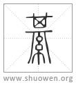

綦
綥或从其。
清代 段玉裁《說文解字注》
- 帛蒼艾色也。
蒼者、艸色也。艾者、仌臺也。蒼艾色、謂蒼然如艾色是爲𦁰。毛傳曰。綦巾、蒼艾色。許所本也。鄭箋則云。綦、綦文也。綦文者、文錯畫也。象交文。今作紋是也。不純綦而紋路蒼畫爲十字相交。是爲綦文。曹風。其弁伊騏。傳曰。騏、騏文也。秦風傳曰。騏、綦文也。魯頌傳。蒼騏曰騏。顧命騏弁。鄭注曰。靑黑曰騏。玉藻綦組綬。注曰。綦文襍色也。皆謂蒼文也。
- 从糸。𢍁聲。
𢍁各本作畀。倂篆體作𦁰。今正。此用艸部之𢍁爲聲。非用丌部之畀爲聲也。艸部之𢍁从𠙹缶之𠙹爲聲。非由、非鬼頭之？也。𠙹在古音弟一部。？在古音弟十五部。此不可或紊者也。其亦古音弟一部也。故？字亦作綦。經典用之。徐鉉以補說文或體。許本書無之。渠之切。一部。玉篇作綨。
- 詩曰。縞衣𦁰巾。未嫁女所服。
鄭風出其東門文。傳曰。縞衣、白色男服也。綦巾、蒼艾色女服也。箋云。縞衣綦巾所爲作者之妻服也。鄭與毛異。許用毛說。而以未嫁二字申毛意。
- 一曰不𠎥𦁰。
不借亦作薄借。薄音博。禮喪服傳曰。繩屨者、繩菲也。注云。繩菲、今時不借也。急就篇作不借。釋名作搏腊、同耳。周禮弁師注曰。璂讀如薄借綦之綦。不借綦、若今云艸鞵襻也。士喪禮組綦注云。綦、屨係也。所以拘止屨也。讀如馬絆綦之綦。內則屨著綦注亦云。綦、屨繫也。按許不云一曰屨系而舉不借綦者、以俗語易曉也。如今小兒鞵帶。
- 𦁰或从其。
大徐所補。攷玉部有𤪌。艸部有藄。則當依大徐補也。